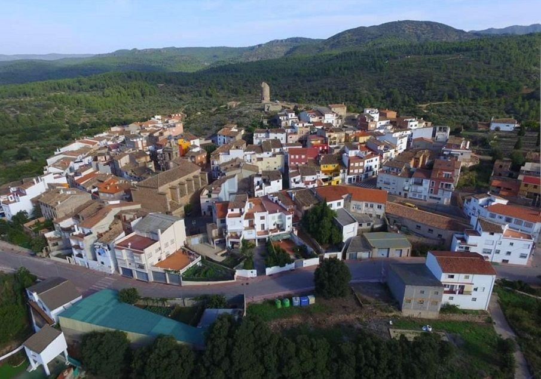

El pueblo
Un pueblo entre montañas
Matet es un municipio de la comarca del Alto Palancia, situado en la vertiente septentrional de la Sierra de Espadán. Sus calles estrechas y adaptadas a las curvas del terreno revelan su origen árabe, y el paisaje que lo rodea —pinares de pino rodeno, alcornocales, barrancos y fuentes— lo convierten en un destino singular.
El pueblo crece a la sombra de la Torre del Pilón, una torre defensiva árabe del siglo XI que corona la colina sobre la que se asienta el casco urbano. Flanqueado por el barranco del Pilar y la rambla del Perrudo, Matet vive ligado al agua y a la tierra desde tiempos inmemoriales.
Su mayor orgullo gastronómico es el aceite de oliva virgen extra, producido en la almazara tradicional y reconocido como uno de los mejores de la comarca.
